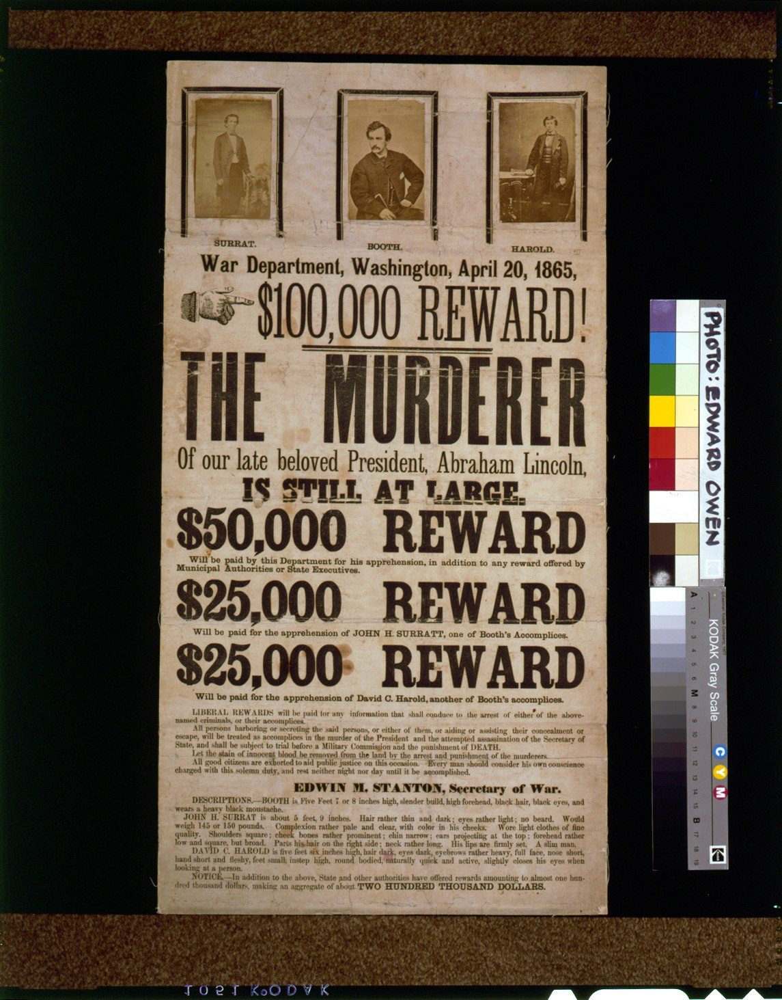

References / Poster / 398
“$100,000 Reward! The Murderer of our late beloved President” broadside
The War Department’s reward broadside of 20 April 1865 for Lincoln’s assassin and two accomplices, set in condensed gothics and fat slab capitals under three mounted photographs.
- Source
- Library of Congress: $100,000 reward! The murderer of our late beloved President, Abraham Lincoln, is still at large
- Creator
- United States War Department (issuer)
- Made
- 1865
- Style
- Victorian typography (agent-proposed, not yet reviewed by a person)
- Moods
- Urgent, official, stark
- Evidence
- Inspected the Library of Congress photograph (cph 3g05341) through its Commons copy at 1145 × 1463 px. The image is a transparency of the copy in “Miscellaneous Items in High Demand” with a colour bar and gray scale beside it. LoC catalogues other copies (for example rbpe.00000800), which may differ.
- Reviewed
- Rights
- Open license, stored. License: public domain. Rights policy

Context
The Library of Congress catalogues the item as 1 print (broadside): text and 3 photoprints, 1865, and marks it “No known restrictions on publication.” LoC 96521960.
The broadside is dated “War Department, Washington, April 20, 1865” and is signed by Edwin M. Stanton, Secretary of War.
Observed
- Three albumen portraits in black-bordered mounts sit across the top, captioned SURRAT., BOOTH., and HAROLD. in small capitals.
- A pointing hand engraving points at “$100,000 REWARD!” set in a tall condensed sans-serif with a thick-and-thin rule below.
- “THE MURDERER” runs in a very large, very condensed sans-serif. The next line returns to a condensed mixed-case sans.
- “IS STILL AT LARGE.” is set in a black slab or Clarendon capital, and the three reward lines in a wide fat slab with bracketed serifs.
- Every display line is centred and spans the sheet. Small roman text in justified paragraphs fills the lower third.
- Black ink on buff paper, with folds, stains, and uneven inking in the big letters.
Why it belongs
The sheet shows how a government notice used the commercial poster’s range of faces. Width does the work: condensed letters for the long line, a wide slab for the short repeated “REWARD”.
The photographs are an exception that marks the 1860s. Most bills of the period used small stock cuts or no images.
Borrow
Use a repeated phrase in one face as a vertical rhythm, and change only the number in front of it.
Put a pointing hand before the key line instead of a colour change.
Measured
Machine-extracted by tools/image-traits.py on . Full measurement.
- Mean chroma
- 0.11
- Palette
- #050806 34%
- #c4b19a 13%
- #b69e87 9%
- #3b210d 7%
- #462e16 5%
- #cabca8 4%
- #a58e74 4%
- #8e7758 4%

